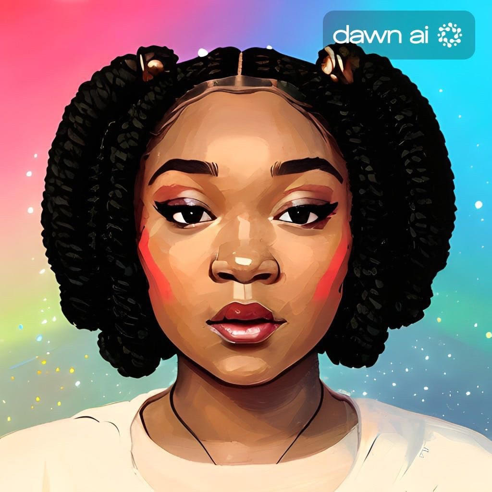

Hello I'am Christina
Bienvenue sur mon portfolio. Je suis passionné par
la création de sites web et je souhaite partager
mon travail avec vous.
Welcome to my portfolio. I am passionate about web development and I want to share my work with you.
